The number of distinct truth table for n variables are 2^(2^n) the first 2 is for the output value, 2^n are the number of rows.
An hypothesis for conjunctive functions can be represented with a vector of n features. The vector is filled with 0, 1, ? (don't care), and null. Since all hypothesis with at least a null are equivalent the |H| = 3^n + 1
Given two hypotheses h1 and h2, h1 is more general than or equal to h2 (h1 >= h2) iff every instance that satisfies h2 also satisfies h1.
Given two hypotheses h1 and h2, h1 is (strictly) more general than h2 (h1>h2) iff h1 >= h2 and it is not the case that h2 >= h1.
To decide how to split the data when building a tree we use entropy. Given a dataset D with c categories entropy is defined as:
 Where p_i is the percentage of the data belonging to that class.We pick the feature that gives use the highest information gain, which is defined as
Each branch of the tree defines a rule. Each rule has a support |D_v| / |D| and a confidence |D_v+| / |D_v|
Building a tree is expensive and may lead to overfitting of the data, i.e. when the hypothesis we've found works worst on independent test data. So we must prune the tree.
We can either pre-prune, that is, we stop growing the tree when we have no sufficient data left or post-prune, when we grow the full tree then remove sub-trees with insufficient evidence.
We label the newly created leaf with a majority function evaluated on the subtree.